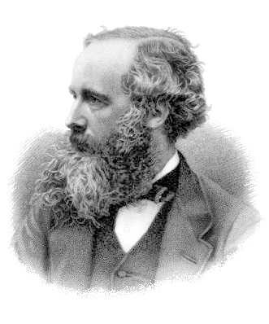

Maxwell's equations
The laws of electro-magnetism for free space in Gaussian units convention.
Maxwell's Equations.
Maxwell's equations are a set of coupled partial differential equations that, together with the Lorentz force law, form the foundation of classical electromagnetism, classical optics, and electric circuits. The equations provide a mathematical model for electric, optical, and radio technologies, such as power generation, electric motors, wireless communication, lenses, radar etc. Maxwell's equations describe how electric and magnetic fields are generated by charges, currents, and changes of the fields. An important consequence of the equations is that they demonstrate how fluctuating electric and magnetic fields propagate at a constant speed (c) in a vacuum. Known as electromagnetic radiation, these waves may occur at various wavelengths to produce a spectrum of light from radio waves to γ-rays. The equations are named after the physicist and mathematician James Clerk Maxwell, who published an early form of the equations that included the Lorentz force law between 1861 and 1862. Maxwell first used the equations to propose that light is an electromagnetic phenomenon.
The equations have two major variants. The microscopic Maxwell equations have universal applicability but are unwieldy for common calculations. They relate the electric and magnetic fields to total charge and total current, including the complicated charges and currents in materials at the atomic scale. The "macroscopic" Maxwell equations define two new auxiliary fields that describe the large-scale behaviour of matter without having to consider atomic scale charges and quantum phenomena like spins. However, their use requires experimentally determined parameters for a phenomenological description of the electromagnetic response of materials.
The term "Maxwell's equations" is often also used for equivalent alternative formulations. Versions of Maxwell's equations based on the electric and magnetic potentials are preferred for explicitly solving the equations as a boundary value problem, analytical mechanics, or for use in quantum mechanics. The covariant formulation (on spacetime rather than space and time separately) makes the compatibility of Maxwell's equations with special relativity manifest. Maxwell's equations in curved spacetime, commonly used in high energy and gravitational physics, are compatible with general relativity. In fact, Einstein developed special and general relativity to accommodate the invariant speed of light, a consequence of Maxwell's equations, with the principle that only relative movement has physical consequences.
Since the mid-20th century, it has been understood that Maxwell's equations are not exact, but a classical limit of the fundamental theory of quantum electrodynamics.
WikipediaFormulation in Gaussian units convention.
The definitions of charge, electric field, and magnetic field can be altered to simplify theoretical calculation, by absorbing dimensioned factors of \(\epsilon_{0}\) and \(\mu_{0}\) into the units of calculation, by convention. With a corresponding change in convention for the Lorentz force law this yields the same physics, i.e. trajectories of charged particles, or work done by an electric motor. These definitions are often preferred in theoretical and high energy physics where it is natural to take the electric and magnetic field with the same units, to simplify the appearance of the electromagnetic tensor: the Lorentz covariant object unifying electric and magnetic field would then contain components with uniform unit and dimension. Such modified definitions are conventionally used with the Gaussian (CGS) units.
WikipediaIn this pages we present Maxwell equations in differential form using these definitions and conventions, colloquially "in Gaussian units"
Scientists who contributed to developments of EM theory.
- Charles Augustin de Coulomb (1736 – 1806)
- André-Marie Ampère (1775 - 1836)
- Michael Faraday (1791 – 1867)
- James Clerk Maxwell (1831 – 1879)
- Richard Phillips Feynman (1918 - 1988)